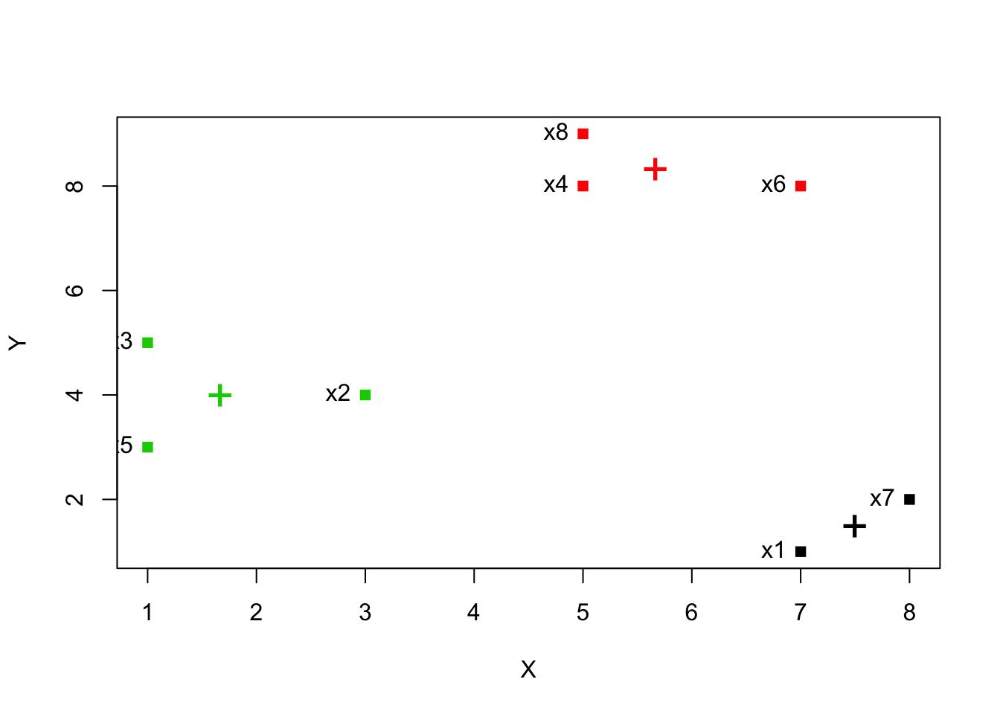

Lets construct a more small but instructive example:
X = c(7, 3, 1, 5, 1, 7, 8, 5)
Y = c(1, 4, 5, 8, 3, 8, 2, 9)
rnames = c("x1", "x2", "x3", "x4", "x5", "x6", "x7", "x8")
kdata = data.frame(X, Y, row.names = rnames)and plot the 2D dataset:
plot(kdata, pch = 15)
text(kdata, labels = row.names(kdata), pos = 2)# we take as initial centers the first 3 points and this implies also that k = 3
clust = kmeans(kdata, centers=kdata[1:3,])
clust$centers## X Y
## 1 7.500000 1.500000
## 2 5.666667 8.333333
## 3 1.666667 4.000000clust$cluster## x1 x2 x3 x4 x5 x6 x7 x8
## 1 3 3 2 3 2 1 2we can also easily retrieve metrics like cohesion and separation.
cohesion = clust$tot.withinss
separation = clust$betweenssand make a nice visualization
plot(kdata, col = clust$cluster, pch = 15)
text(kdata, labels = row.names(kdata), pos = 2)
points(clust$centers, col = 1:length(clust$centers), pch = "+", cex = 2)
Lets apply the k-means clustering algorithm to the iris dataset. To begin with, we will exclude the Species column.
data <- iris[,-5]
clustering = kmeans(data, centers = 3)
clustering## K-means clustering with 3 clusters of sizes 62, 38, 50
##
## Cluster means:
## Sepal.Length Sepal.Width Petal.Length Petal.Width
## 1 5.901613 2.748387 4.393548 1.433871
## 2 6.850000 3.073684 5.742105 2.071053
## 3 5.006000 3.428000 1.462000 0.246000
##
## Clustering vector:
## [1] 3 3 3 3 3 3 3 3 3 3 3 3 3 3 3 3 3 3 3 3 3 3 3 3 3 3 3 3 3 3 3 3 3 3 3
## [36] 3 3 3 3 3 3 3 3 3 3 3 3 3 3 3 1 1 2 1 1 1 1 1 1 1 1 1 1 1 1 1 1 1 1 1
## [71] 1 1 1 1 1 1 1 2 1 1 1 1 1 1 1 1 1 1 1 1 1 1 1 1 1 1 1 1 1 1 2 1 2 2 2
## [106] 2 1 2 2 2 2 2 2 1 1 2 2 2 2 1 2 1 2 1 2 2 1 1 2 2 2 2 2 1 2 2 2 2 1 2
## [141] 2 2 1 2 2 2 1 2 2 1
##
## Within cluster sum of squares by cluster:
## [1] 39.82097 23.87947 15.15100
## (between_SS / total_SS = 88.4 %)
##
## Available components:
##
## [1] "cluster" "centers" "totss" "withinss"
## [5] "tot.withinss" "betweenss" "size" "iter"
## [9] "ifault"The clustering object contains a lot of informations and components:
total_SS is the sum of squared distances of each data point to the global sample meanbetween_SS is the total_SS minus the the sum of the sum of square distances between points and their centers# The centers
clustering$centers## Sepal.Length Sepal.Width Petal.Length Petal.Width
## 1 5.901613 2.748387 4.393548 1.433871
## 2 6.850000 3.073684 5.742105 2.071053
## 3 5.006000 3.428000 1.462000 0.246000# The clustering
clustering$cluster## [1] 3 3 3 3 3 3 3 3 3 3 3 3 3 3 3 3 3 3 3 3 3 3 3 3 3 3 3 3 3 3 3 3 3 3 3
## [36] 3 3 3 3 3 3 3 3 3 3 3 3 3 3 3 1 1 2 1 1 1 1 1 1 1 1 1 1 1 1 1 1 1 1 1
## [71] 1 1 1 1 1 1 1 2 1 1 1 1 1 1 1 1 1 1 1 1 1 1 1 1 1 1 1 1 1 1 2 1 2 2 2
## [106] 2 1 2 2 2 2 2 2 1 1 2 2 2 2 1 2 1 2 1 2 2 1 1 2 2 2 2 2 1 2 2 2 2 1 2
## [141] 2 2 1 2 2 2 1 2 2 1# The total sum of squares (the sum of squared distances of each data point to the global sample mean)
clustering$totss## [1] 681.3706# The per cluster sum of squares
clustering$withinss## [1] 39.82097 23.87947 15.15100# The sum of per cluster sum of squares
clustering$tot.withinss## [1] 78.85144# The total sum of squares minus the sum of per cluster sum of squares
clustering$betweenss## [1] 602.5192# The sizes of the clusters
clustering$size## [1] 62 38 50# The number of iterations before conversion
clustering$iter## [1] 2# Integer indicating possible algorithm problem
clustering$ifault## [1] 0For comparing the groupings provided by k-means with the actual classes we can use the table function:
table(iris$Species, clustering$cluster)##
## 1 2 3
## setosa 0 0 50
## versicolor 48 2 0
## virginica 14 36 0With different initial centers in k-means one will get different values in the table above.
Lets also plot 2 dimensions of the iris dataset and visualize the clusters and their centers:
plot(iris[c("Sepal.Length", "Sepal.Width")], col = clustering$cluster)
points(clustering$centers[,c("Sepal.Length", "Sepal.Width")], col = 1:3, pch = 8, cex=2)Returning to the iris dataset, a technique to find the number of clusters that describe the data better we can calculate the SSE (Sum of Squared Errors) for different number of clusters, say k = 1, 2, …, 10 etc. We can do that with the following commands:
# Calculate the totss (k = 1)
SSE <- (nrow(data) - 1) * sum(apply(data, 2, var))
for(i in 2:10) {
SSE[i] <- kmeans(data, centers = i)$tot.withinss
}
plot(1:10, SSE, type="b", xlab="Number of Clusters", ylab="SSE")We can see that k = 3 is a good pick and actually approximates the number of species available in the iris dataset.
To calculate the Silhouette coefficient we have to install and load the library cluster:
# Assuming cluster library is installed with: install.packages('cluster')
library(cluster)
silhouette = silhouette(clustering$cluster, dist(data))
plot(silhouette)The closer to 1 the better.